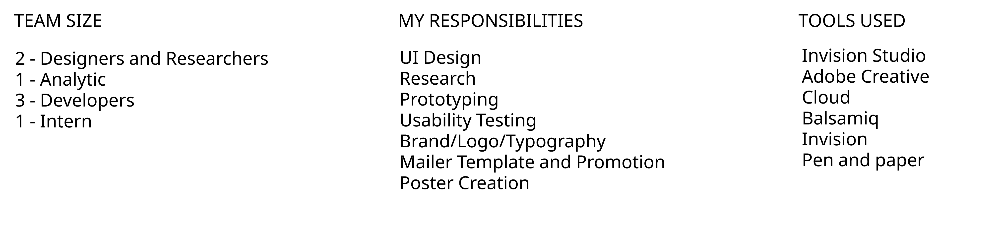
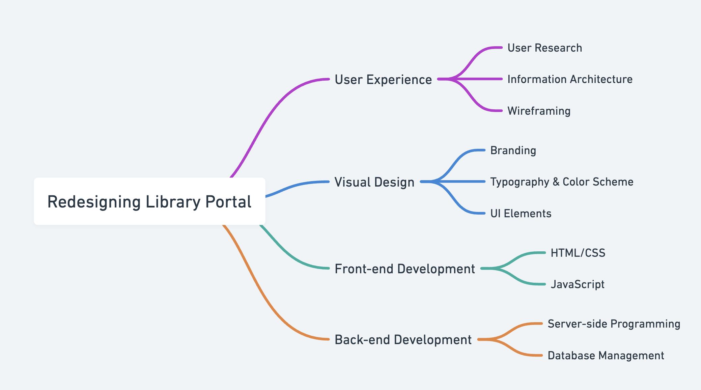
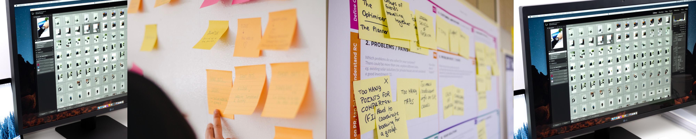
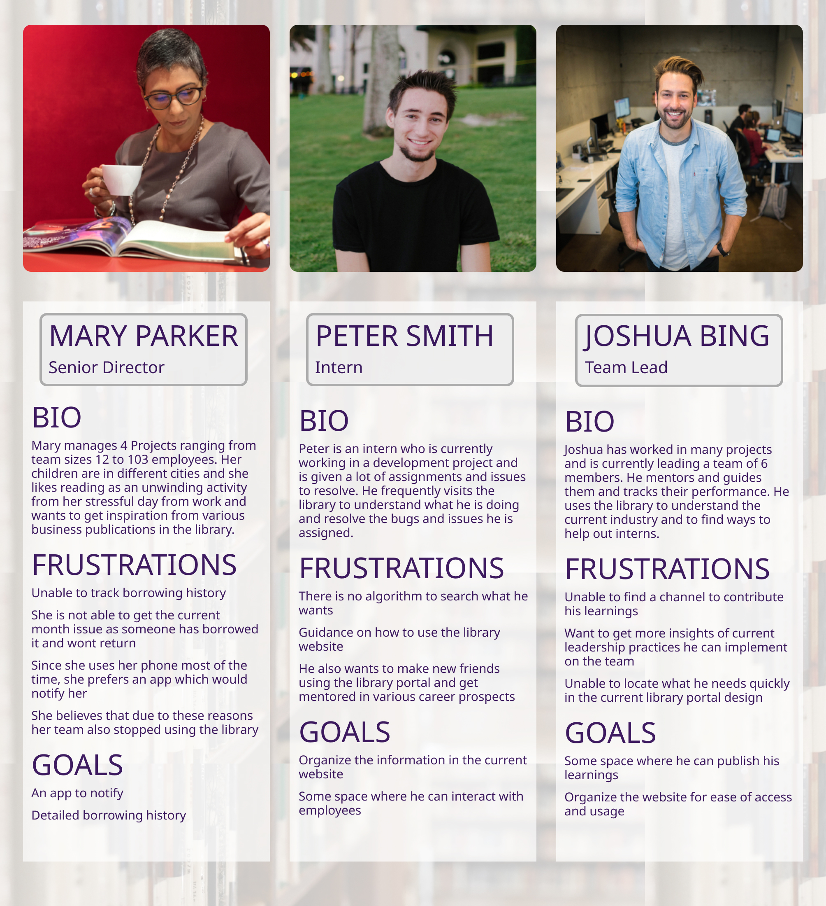
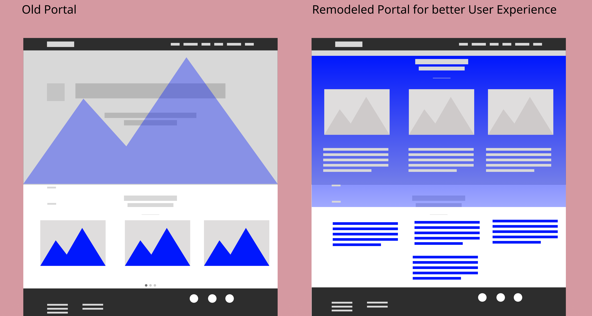

The Accenture Library is a treasure trove of knowledge designed to empower employees with resources to enhance their skill sets, expand their vocabulary, deepen their knowledge, or simply unwind with a good read. With a wealth of online resources available 24/7 to all active employees, the library serves as an invaluable tool for professional and personal growth.
However, many employees were unaware of this rich resource within the organization. To address this challenge, we embarked on a journey to increase awareness and accessibility by reimagining the library portal. This redesign includes a more intuitive web portal and the creation of a mobile app featuring frequently accessed URLs, ensuring employees can seamlessly engage with library resources anytime, anywhere.
How might we redesign the library portal to provide a better user experience and increase awareness and engagement among employees?
Empathize
Understanding the User’s World
MY ROLE DURING THIS PHASE: (1ST SPRINT)

The posters were printed and displayed across the company. I prepared the newsletter template and it was shared across every Monday - called "Motivational Mondays"! There were several contests going through mail like crosswords etc., and the library portal was now under good usage. Here is when our second sprint started. The Library portal website started getting hits and the employees started visiting the library.
02 USER RESEARCH
We met with the teams to which was responsible of the portal development the business requirement was "To Increase the employees' awareness of the existence of the library and utilization of the available facilities provided to the employees."
First, we conducted the initial in-person interviews with the employees who came to visit the library. We chose 6 participants representing different requirement and career aspirations.
I came up with three personas based on the user research. Mary, Peter and Joshua with different work experience, reading habits and need for the library.
03 DESIGN OPTIONS
We started brainstorming different ideas and layouts. My main motive here was to do minimal changes to the existing portal design whilst making it easily accessible and user friendly. I began my design process with low fidelity sketches.
04 UI DESIGN
Steps taken to re-design the website
Since we were re-designing the existing portal, I decided to go with the current typography,
color
palette and branding logos with some additional complementary fonts and colors that would
enhance
the user interaction.
The Major user pain point for re-designed the website was:
BAD NAVIGATION
I noticed that the website had complex and inconsistent navigation which caused the User to get confused with the Portal thus not making use of this website

After the sketches were ready, I met with the developers and discussed on the coding constraints and timelines. We decided to reuse of most of the existing components as it involved minimal changes to the existing code.
After this phase, I started creating a prototype for testing. I used Invision Studio and Invision as it was easy to collaborate, being on the same page. Since the analytics found that the most clicked part of the website was borrowing, and most of our personas suggested this feature, I also created a mockup for a very basic App that would focus on borrowing and notification of due dates and availability of the resources.
Most of my sketches and wireframes cannot be shared here due to Non Disclosure Policy. My Case study only consists of the design methods I used to solve the Problem at hand.
05 USABILITY TESTING:
Before we went live with the changes, I've made a testing round in order to reveal possible usability problems. To better understand how users interact without newly changed portal, I conducted A/B Testing.
I also concluded how our personas would respond to the changes:
Mary: "I get notifications, and am able to track the resources I need!"
Peter: "The search algorithm is better now and I know the site map and everything is
accessible"
Joshua: "I can publish my experience in the blog section and am able to guide interns
outside my
team as well"